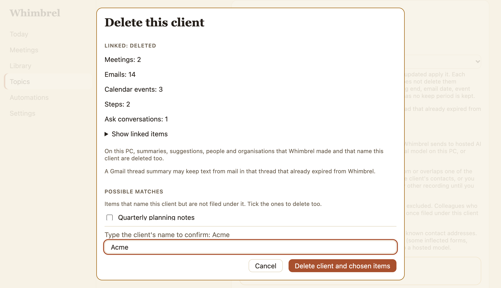
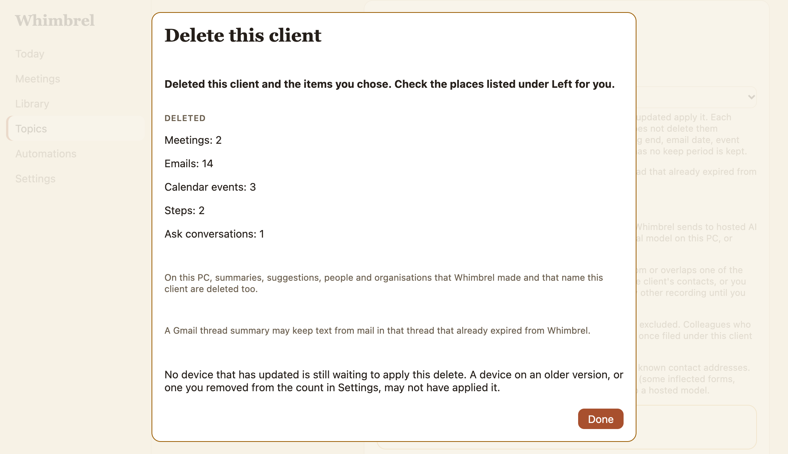
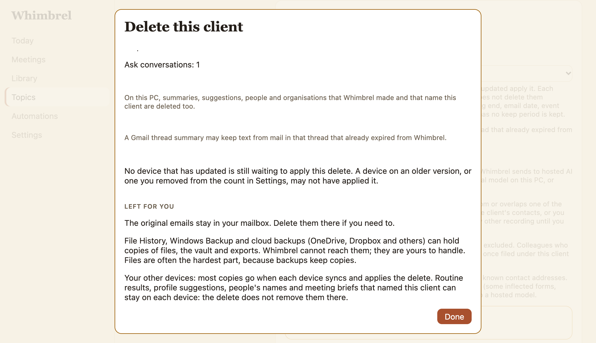

What's new in Whimbrel 0.9.80
Client controls and an encrypted memory database. Mac and Windows.
1Every client page has four controls: delete, keep, export, exclude from hosted models.
Whimbrel



2Delete shows you what will go, then gives a receipt of what was removed and what is left for you to check. The receipt holds no client name or text.
3Keep a client's material for a set time, or export it as plain files.
4Material that names or involves the client is kept out of requests to hosted AI models. Matching is on whole words, so it can miss, and material that already left can't be recalled.
5You can encrypt the memory database on your computer. Keep the recovery key somewhere other than this computer.
What the encryption covers
- Only the memory database is encrypted.
- Audio and other files are not.
- Phones are unchanged.
Client controls and encryption
whimbrelapp.com/for/client-controls · whimbrelapp.com/features/encryption-at-rest